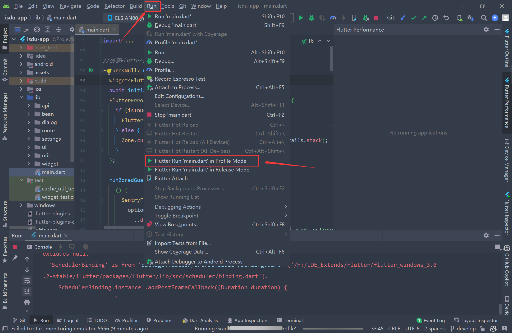
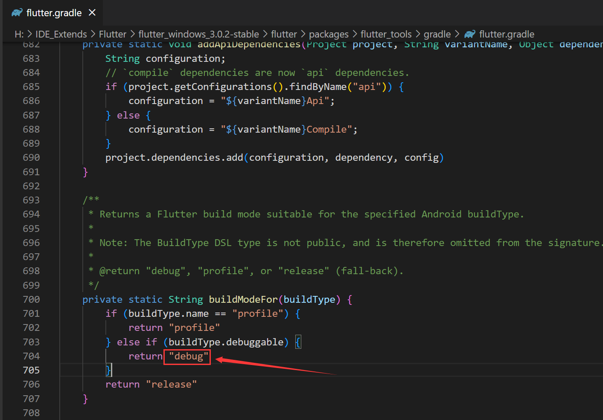
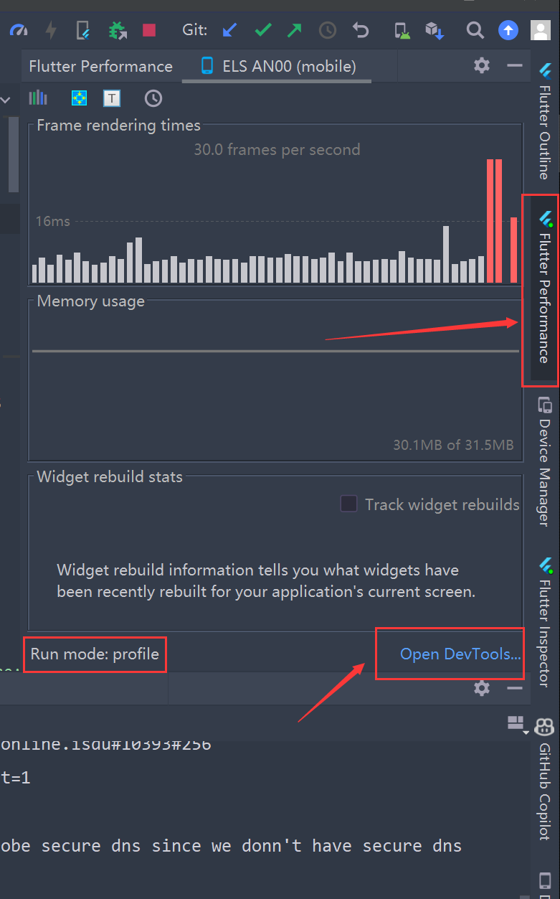
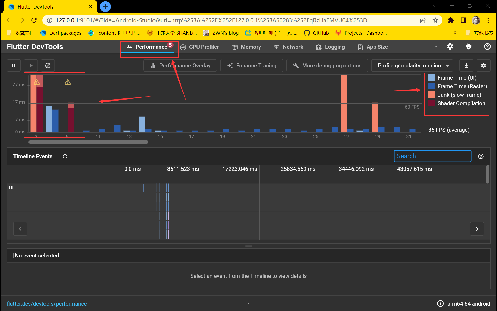

FLutter性能优化
FLutter性能优化
准备
以 profile 模式启动应用，如果是混合 Flutter 应用，在 Flutter SDK的flutter/packages/flutter_tools/gradle/flutter.gradle 的 buildModeFor 方法中将 debug 模式改为 profile即可。
当然，如非必要，不太建议使用第二种方式
位置如图：
Run > Flutter Run main.dart in Profile Mode


与调试代码可以在调试模式下检测 Bug 不同，性能问题需要在发布模式下使用真机进行检测。这是因为，相比发布模式而言，调试模式增加了很多额外的检查（比如断言），这些检查可能会耗费很多资源，而更重要的是，调试模式使用 JIT 模式运行应用，代码执行效率较低。这就使得调试模式运行的应用，无法真实反映出它的性能问题。
而另一方面，模拟器使用的指令集为 x86，而真机使用的指令集是 ARM。这两种方式的二进制代码执行行为完全不同，因此，模拟器与真机的性能差异较大，例如，针对一些 x86 指令集擅长的操作，模拟器会比真机快，而另一些操作则会比真机慢。这也同时意味着，你无法使用模拟器来评估真机才能出现的性能问题。
Flutter Inspector
Repaint Rainbow
点击 “Repaint Rainbow” 图标，它会 为所有 RenderBox 绘制一层外框，并在它们重绘时会改变颜色。
作用
帮你找到 App 中频繁重绘导致性能消耗过大的部分。
例如：一个小动画可能会导致整个页面重绘，这个时候使用 RepaintBoundary Widget 包裹它，可以将重绘范围缩小至本身所占用的区域，这样就可以减少绘制消耗。
使用场景
例如 页面的进度条动画刷新时会导致整个布局频繁重绘。
缺点
使用 RepaintBoundary Widget 会创建额外的绘制画布，这将会增加一定的内存消耗。
使用性能视图 (Performance view)


帧事件图：
UI 线程执行 Dart VM 中的 Dart 代码。它包括你的应用程序和 Flutter 框架的所有代码。当你创建或打开一个页面， UI 线程会创建一个图层树和一个轻量级的与设备无关的绘制指令集，并把图层树交给设备的 raster（栅格）线程进行渲染
栅格化线程（也就是我们之前知道的 GPU 线程）执行 Flutter 引擎中图形相关的代码。这个线程通过与 GPU (图形处理单元) 通信，获取图形树并显示它。你不能直接访问 Raster 线程或它的数据，但如果这个线程较慢，那它肯定是由你的 Dart 代码引起的。图形化库 Skia 运行在这个线程上，有时候也称它为光栅线程。
有时候一个页面的图形层树比较容易构建但 raster 线程的渲染却比较昂贵。在这种情形下，你需要找出导致渲染变慢的代码。为 GPU 设定特定多种类型的 workload 是相当困难的。在一些特定的情形下，多个对象的透明度重叠、剪切或阴影，有可能会导致不必要的 saveLayer() 的调用。
卡顿 (Jank)：帧渲染图表使用红色图层显示帧延时。如果一帧的渲染时间超过 16ms，则会被认为此帧是延时的，为了达到帧渲染频率到 60 FPS (每秒帧数)，每一帧的渲染时间必须等于或少于 16 ms。如果没有达到这个目标，你会发现 UI 不流畅或丢帧。
着色器渲染：在 Flutter 应用中，着色器会在初次使用时发生渲染。参与了着色器编译的构建帧已标记为深红色。
时间线事件图：
时间线事件图显示了应用程序中的所有事件跟踪。Flutter 框架在构建框架、绘制场景和跟踪 HTTP 流量等其他活动时发出时间线事件。这些事件会在时间轴上显示出来。还可以通过 dart: developerTimeline 和 TimelineTaskAPI 发送自己的 Timeline 事件。
Enhance Tracing
启用该选项后，帧构建时间可能会受到影响。
性能指标
摘自https://flutter.cn/docs/perf/metrics
- 第一帧的启动时间
- 当 WidgetsBinding.instance.firstFrameRasterized 为 true 时查看耗时。
- 查看 性能数据看板。
- 一帧的构建时间，栅格化时间，以及总时间
- 在 API 文档中查看
FrameTiming。
- 在 API 文档中查看
- 一帧的构建时间
buildDuration(*_frame_build_time_millis)- 我们建议监测四个数据：平均值、90 分位值、99 分位值和最差帧构建时间。
- 例如，查看
flutter_gallery__transition_perf测试案例中的 构建数据 。
- 一帧的栅格化时间
rasterDuration(*_frame_build_time_millis)- 我们建议监测四个数据：平均值、90 分位值、99 分位值和最差帧构建时间。
- 例如，查看
flutter_gallery__transition_perf测试案例中的 栅格化数据 。
- CPU/GPU 的使用情况（一个可以近似衡量功耗的指标）
- 该数据目前仅能通过跟踪事件获取。查看 profiling_summarizer.dart 。
- 查看
simple_animation_perf_ios测试案例中的 CPU/GPU 数据。
- release_size_bytes 对 Flutter 应用程序的大小进行估算
- 查看 basic_material_app_android、basic_material_app_ios、hello_world_android、hello_world_ios、flutter_gallery_android 和 flutter_gallery_ios 测试案例。
- 查看数据看板中的 体积大小 数据。
- 有关如何更精确的测量应用体积信息，查看 应用体积 页面。
布局加载优化
Flutter 为什么要使用声明书 UI 的编写方式？
为了减轻开发人员的负担，无需编写如何在不同的 UI 状态之间进行切换的代码，Flutter 使用了声明式的 UI 编写方式，而不是 Android 和 iOS 中的命令式编写方式。
这样的话，当用户界面发生变化时，Flutter 不会修改旧的 Widget 实例，而是会构造新的 Widget 实例。
Fluuter 框架使用 RenderObjects 管理传统 UI 对象的职责（比如维护布局的状态）。 RenderObjects 在帧之间保持不变， Flutter 的轻量级 Widget 通知框架在状态之间修改 RenderObjects， 而 Flutter Framework 则负责处理其余部分。
常规优化
常规优化即针对 build() 进行优化，build() 方法中的性能问题一般有两种：耗时操作和 Widget 堆叠。
在 build() 方法中执行了耗时操作
我们应该尽量避免在 build() 中执行耗时操作，因为 build() 会被频繁地调用，尤其是当 Widget 重建的时候。
此外，我们不要在代码中进行阻塞式操作，可以将文件读取、数据库操作、网络请求等通过 Future 来转换成异步方式来完成。
最后，对于 CPU 计算频繁的操作，例如图片压缩，可以使用 isolate 来充分利用多核心 CPU。
isolate 作为 Flutter 中的多线程实现方式，之所以被称之为 isolate（隔离），是因为每一个 isolate 都有一份单独的内存。
Flutter 会运行一个事件循环，它会从事件队列中取得最旧的事件，处理它，然后再返回下一个事件进行处理，依此类推，直到事件队列清空为止。每当动作中断时，线程就会等待下一个事件。
实质上，不仅仅是 isolate，所有的高级 API 都能够应用于异步编程，例如 Futures、Streams、async 和 await，它们全部都是构建在这个简单的事件循环之上。
而，async 和 await 实际上只是使用 futures 和 streams 的替代语法，它将代码编写形式从异步变为同步，主要用来帮助你编写更清晰、简洁的代码。
此外，async 和 await 也能使用 try on catch finally 来进行异常处理，这能够帮助你处理一些数据解析方面的异常。
使用 Widget 而不是函数
如果一个函数可以做同样的事情，Flutter 就不会有 StatelessWidget ，使用 StatelessWidget 的最大好处在于：能尽量避免不必要的重建。总的来说，它的优势有：
- 1）、允许性能优化：const 构造函数，更细粒度的重建等等。
- 2）、确保在两个不同的布局之间切换时，能够正确地处理资源（因为函数可能重用某些先前的状态）。
- 3）、确保热重载正常工作，使用函数可能会破坏热重载。
- 4）、在 flutter 自带的 Widget 显示工具中能看到 Widget 的状态和参数。
- 5）、发生错误时，有更清晰的提示：此时，Flutter 框架将为你提供当前构建的 Widget 名称，更容易排查问题。
- 6）、可以定义 key 和方便使用 context 的 API。
使用 nil 去替代 Container() 和 SizedBox()
首先，你需要明白 nil 仅仅是一个基础的 Widget 元素 ，它的构建成本几乎没有。
在某些情况下，如果你不想显示任何内容，且不能返回 null 的时候，你可能会返回类似 const SizedBox/Container 的 Widget，但是 SizedBox 会创建 RenderObject，而渲染树中的 RenderObject 会带来多余的生命周期控制和额外的计算消耗，即便你没有给 SizedBox 指定任何的参数。
下面，是我平时使用 nil 的一套方式：
1 | // BEST |
列表优化
在构建大型网格或列表的时候，我们要尽量避免使用 ListView(children: [],) 或 GridView(children: [],)，因为，在这种场景下，不管列表内容是否可见，会导致列表中所有的数据都会被一次性绘制出来，这种用法类似于 Android 的 ScrollView。
如果我们列表数据比较大的时候，建议使用 ListView 和 GridView 的 builder 方法，它们只会绘制可见的列表内容，类似于 Android 的 RecyclerView。
其实，本质上，就是对列表采用了懒加载而不是直接一次性创建所有的子 Widget，这样视图的初始化时间就减少了。
针对于长列表，记得在 ListView 中使用 itemExtent。
有时候当我们有一个很长的列表，想要用滚动条来大跳时，使用 itemExtent 就很重要了，它会帮助 Flutter 去计算 ListView 的滚动位置而不是计算每一个 Widget 的高度，与此同时，它能够使滚动动画有更好的性能。
减少可折叠 ListView 的构建时间
针对于可折叠的 ListView，未展开状态时，设置其 itemCount 为 0，这样 item 只会在展开状态下才进行构建，以减少页面第一次的打开构建时间。
深入优化
优化光栅线程
所有的 Flutter 应用至少都会运行在两个并行的线程上：UI 线程和 Raster 线程。
**UI 线程是你构建 Widgets 和运行应用逻辑的地方。 ** Raster 线程是 Flutter 用来栅格化你的应用的。它从 UI 线程获取指令并将它们转换为可以发送到图形卡的内容。
在光栅线程中，会获取图片的字节，调整图像的大小，应用透明度、混合模式、模糊等等，直到产生最后的图形像素。然后，光栅线程会将其发送到图形卡，继而发送到屏幕上显示。
使用 Flutter DevTools-Performance 进行检测，步骤如下：
- 1、在 Performance Overlay 中，查看光栅线程和 UI 线程哪个负载过重。
- 2、在 Timeline Events 中，找到那些耗费时间最长的事件，例如常见的 SkCanvas::Flush，它负责解决所有待处理的 GPU 操作。
- 3、找到对应的代码区域，通过删除 Widgets 或方法的方式来看对性能的影响。
用 key 加速 Flutter 的性能优化光栅线程
一个 element 是由 Widget 内部创建的，它的主要目的是，知道对应的 Widget 在 Widget 树中所处的位置。但是元素的创建是非常昂贵的，通过 Keys（ValueKeys 和 GlobalKeys），我们可以去重复使用它们。
GlobalKey 与 ValueKey 的区别？
GlobalKey 是全局使用的 key，在跨小部件的场景时，你就可以使用它去刷新其它小部件。但，它是很昂贵的，如果你不需要访问 BuildContext、Element 和 State，应该尽量使用 LocalKey。
而 ValueKey 和 ObjectKey、UniqueKey 一样都归属于局部使用的 LocalKey，无法跨容器使用，ValueKey 比较的是 Widget 的值，而 ObjectKey 比较的是对象的 key，UniqueKey 则每次都会生成一个不同的值。
元素的生命周期
- Mount：挂载，当元素第一次被添加到树上的时候调用。
- Active：当需要激活之前失活的元素时被调用。
- Update：用新数据去更新 RenderObject。
- Deactive：当元素从 Widget 树中被移除或移动时被调用。如果一个元素在同一帧期间被移动了且它有 GlobalKey，那么它仍然能够被激活。
- UnMount：卸载，如果一个元素在一帧期间没有被激活，它将会被卸载，并且再也不会被复用。
优化方式
**为了去改善性能，你需要去尽可能让 Widget 使用 Activie 和 Update 操作，并且尽量避免让 Widget触发 UnMount 和 Mount。**而使用 GlobayKeys 和 ValueKey 则能做到这一点：
1 | /// 1、给 MaterialApp 指定 GlobalKeys |
如何知道哪些 Widget 会被 Update，哪些 Widget会被 UnMount？
只有 build 直接 return 的那个根 Widget 会自动更新，其它都有可能被 UnMount，因此都需要给其分配 ValueKey。
为什么没有给 Container 分配 ValueKey？
因为 Container 是 GestureDetector 的一个子 Widget，所以当给 GestureDetector 使用 ValueKey 去实现复用更新时，Container 也能被自动更新。
优势
大幅度减少 Widget的平均构建时间。
缺点
- 过多使用 ValueKey 会让你的代码变得更冗余。
- 如果你的根 Widget 是 MaterialApp 时，则需要使用 GlobalKey，但当你去重复使用 GlobalKey 时可能会导致一些错误，所以一定要避免滥用 Key。
注意📢：在大部分场景下，Flutter 的性能都是足够的，不需要这么细致的优化，只有当产生了视觉上的问题，例如卡顿时才需要去分析优化。
预编译Shader
If the animations on your mobile app appear to be janky, but only on the first run, you can warm up the shader captured in the Skia Shader Language (SkSL) for a significant improvement.
如果你的手机 App上的动画看起来很卡顿，但只是在第一次运行时，你可以预热在 Skia shaders语言 (SkSL) 中捕获的shaders，以此获得显着的改进。

What is shader compilation jank? -什么是shaders编译卡顿？
If an app has janky animations during the first run, and later becomes smooth for the same animation, then it’s very likely due to shader compilation jank.
如果一个App在第一次运行时出现了animation卡顿，后来相同的animation却变得流畅，那么很可能是shaders编译 导致的卡顿。
More technically, a shader is a piece of code that runs on a GPU (graphics processing unit). When a shader is first used, it needs to be compiled on the device. The compilation could cost up to a few hundred milliseconds whereas a smooth frame needs to be drawn within 16 milliseconds for a 60 fps (frame-per-second) display.
从技术上讲，shaders是在 GPU（图形处理单元）上运行的一段代码。 首次使用shaders时，需要在设备上对其进行编译。 编译可能会花费数百毫秒，而流畅的显示帧需要在 16 毫秒内绘制，才能实现 60 fps（每秒帧数）的显示。
Therefore, a compilation could cause tens of frames to be missed, and drop the fps from 60 to 6. This is compilation jank. After the compilation is complete, the animation should be smooth.
因此，一次编译可能会导致数十帧丢失，并将 fps 从 60 降至 6。这就是编译卡顿。 在编译完成后，animation应该是流畅运行的。
Definitive evidence for the presence of shader compilation jank is to see GrGLProgramBuilder::finalize in the tracing with --trace-skia enabled. See the following screenshot for an example timeline tracing.
存在shaders编译卡顿的明确现象是在启用了 --trace-skia 的跟踪中看到 GrGLProgramBuilder::finalize。 有关时间线跟踪的示例，请参见下面的屏幕截图。

What do we mean by “first run”? - 我们所说的“第一次运行”是什么意思？
On Android, “first run” means that the user might see jank the first time opening the app after a fresh installation. Subsequent runs should be fine.
在 Android 上，“首次运行”意味着用户在全新安装后第一次打开App时可能会看到卡顿。 后续运行就没问题。
On iOS, “first run” means that the user might see jank when an animation first occurs every time the user opens the app from scratch.
在 iOS 上，“首次运行”意味着用户可能会在每次用户从头开始打开App时第一次出现动画时看到卡顿。
How to use SkSL warmup - 如何使用 SkSL 热身
As of release 1.20, Flutter provides command line tools for app developers to collect shaders that might be needed for end-users in the SkSL (Skia Shader Language) format. The SkSL shaders can then be packaged into the app, and get warmed up (pre-compiled) when an end-user first opens the app, thereby reducing the compilation jank in later animations. Use the following instructions to collect and package the SkSL shaders:
从 1.20 版开始，Flutter 为App开发人员提供命令行工具，以收集最终用户可能需要的 SkSL（Skia shaders语言）格式的shaders。SkSL shaders可以打包到App中，并在最终用户首次打开App时进行预热（预编译），从而减少后续animation的编译卡顿。 使用以下指令收集和打包 SkSL shaders：
1.Run the app with --cache-sksl turned on to capture shaders in SkSL:
1.运行App带上 --cache-sksl 参数，以便在 SkSL 中捕获shaders：
1 | flutter run --profile --cache-sksl |
If the same app has been previously run without --cache-sksl, then the --purge-persistent-cache flag may be needed:
如果之前在没有 --cache-sksl 的情况下运行相同的App，则可能需要 --purge-persistent-cache 标志：
1 | flutter run --profile --cache-sksl --purge-persistent-cache |
This flag removes older non-SkSL shader caches that could interfere with SkSL shader capturing. It also purges the SkSL shaders so use it only on the first --cache-sksl run.
此标志会消除 ”较旧的非 SkSL shaders缓存“ 对 ”SkSL shaders捕获“的干扰。 它还会清除 SkSL shaders，所以只在第一次运行 --cache-sksl 时使用它。
2.Play with the app to trigger as many animations as needed; particularly those with compilation jank.
2.运行App以根据需要触发尽可能多的animation； 特别是那些有编译卡顿的。
3.Press M at the command line of flutter run to write the captured SkSL shaders into a file named something like flutter_01.sksl.json. For best results, capture SkSL shaders on actual Android and iOS devices separately.
3.在 flutter run 的命令行按 M （我的是Alt+M）将捕获的 SkSL shaders写入名为 flutter_01.sksl.json 的文件中。 为了获取到最佳效果，请分别在真实的 Android 和 iOS 手机上捕获 SkSL shaders。
Build the app with SkSL warm-up using the following, as appropriate:
适当的通过以下方法 让 编译的 App带上 ”SkSL 预热“：
Android:
1 | flutter build apk --bundle-sksl-path flutter_01.sksl.json |
or 或者
1 | flutter build appbundle --bundle-sksl-path flutter_01.sksl.json |
iOS:
1 | flutter build ios --bundle-sksl-path flutter_01.sksl.json |
If it’s built for a driver test like test_driver/app.dart, make sure to also specify --target=test_driver/app.dart (e.g., flutter build ios --bundle-sksl-path flutter_01.sksl.json --target=test_driver/app.dart).
如果它是为像 test_driver/app.dart 这样的驱动程序测试而构建的，请确保还指定 --target=test_driver/app.dart （例如，flutter build ios --bundle-sksl-path flutter_01.sksl.json --target= test_driver/app.dart）。
5.Test the newly built app.
5.测试新建的App。
Alternatively, you can write some integration tests to automate the first three steps using a single command. For example:
或者，你可以编写一些集成测试以使用单个命令自动执行前三个步骤。 例如：
1 | flutter drive --profile --cache-sksl --write-sksl-on-exit flutter_01.sksl.json -t test_driver/app.dart |
With such integration tests, you can easily and reliably get the new SkSLs when the app code changes, or when Flutter upgrades. Such tests can also be used to verify the performance change before and after the SkSL warm-up. Even better, you can put those tests into a CI (continuous integration) system so the SkSLs are generated and tested automatically over the lifetime of an app.
通过此类集成测试，你可以在app代码更改或 Flutter 升级时轻松可靠地获取新的 SkSL。 此类测试还可用于验证 SkSL 预热前后的性能变化。 更好的是，你可以将这些测试放入 CI（持续集成）系统中，以便在App的整个生命周期内自动生成和测试 SkSL。
Take the original version of Flutter Gallery as an example. The CI system is set up to generate SkSLs for every Flutter commit, and verifies the performance, in the transitions_perf_test.dart test. For more details, see the flutter_gallery_sksl_warmup__transition_perf and flutter_gallery_sksl_warmup__transition_perf_e2e_ios32 tasks.
以原版 Flutter Gallery 为例。 CI 系统设置为为每次 Flutter 提交生成 SkSL，并在 transitions_perf_test.dart 测试中验证性能。 有关更多详细信息，请参阅 flutter_gallery_sksl_warmup__transition_perf 和flutter_gallery_sksl_warmup__transition_perf_e2e_ios32 任务。
The worst frame rasterization time is a nice metric from such integration tests to indicate the severity of shader compilation jank. For instance, the steps above reduce Flutter gallery’s shader compilation jank and speeds up its worst frame rasterization time on a Moto G4 from ~90 ms to ~40 ms. On iPhone 4s, it’s reduced from ~300 ms to ~80 ms. That leads to the visual difference as illustrated in the beginning of this article.
最差帧raster时间是此类集成测试的一个很好的指标，用于指示shaders编译卡顿的严重性。 例如，上述步骤减少了 Flutter 库的shaders编译卡顿，并将其在 Moto G4 上的最差raster时间从 ~90 ms 加速到 ~40 ms。 在 iPhone 4s 上，它从 ~300 ms 减少到 ~80 ms。 这导致了本文开头所示的视觉差异。
Frequently asked questions- 常问的问题
Why not just compile or warm up all possible shaders? - 为什么不直接编译或预热所有可能的shaders？
If there were only a limited number of possible shaders, then Flutter could compile all of them when an application is built. However, for the best overall performance, the Skia GPU backend used by Flutter dynamically generates shaders based on many parameters at runtime (for example draws, device models, and driver versions). Due to all possible combinations of those parameters, the number of possible shaders multiplies quickly. In short, Flutter uses programs (app, Flutter, and Skia code) to generate some other programs (shaders).
如果shaders数量有上限，那么 Flutter 可以在构建App时编译所有shaders。 然而，为了获得最佳的整体性能，Flutter 使用的 Skia GPU 在背后会在运行时根据许多参数（例如绘图、设备模型和驱动程序版本）动态生成shaders。 由于这些参数的所有可能组合，可能的shaders数量迅速增加。 简而言之，Flutter 使用程序（app、Flutter 和 Skia 代码）来生成其他一些程序（shaders）。
The number of possible shader programs that Flutter can generate is too large to precompute and bundle with an application.
Flutter 可以生成的可能shaders程序的数量太大而无法预先计算并与App捆绑在一起。
Can SkSLs captured from one device help shader compilation jank on another device? -从一台设备捕获的 SkSL 能否帮助shaders编译在另一台设备上卡顿？
Theoretically, there’s no guarantee that the SkSLs from one device would help on another device (but they also won’t cause any troubles if SkSLs aren’t compatible across devices). Practically, as shown in the table on this SkSL-based warmup issue, SkSLs work surprisingly well even if 1) SkSLs are captured from iOS and then applied to Android devices, or 2) SkSLs are captured from emulators and then applied to real mobile devices. As the Flutter team has only a limited number of devices in the lab, we currently don’t have enough data to provide a big picture of cross-device effectiveness. We’d love you to provide us more data points to see how it works in the wild—FrameTiming can be used to compute the worst frame rasterization time in release mode; the worst frame rasterization time is a good indicator on how severe the shader compilation jank is.
从理论上讲，不能保证来自一台设备的 SkSL 会在另一台设备上有所帮助（但如果 SkSL 不能跨设备兼容，它们也不会造成任何问题）。 实际上，如这个基于 SkSL 的预热问题的表格所示，即使 1) 从 iOS 捕获 SkSL，然后将其应用于 Android 设备，或者 2) 从模拟器捕获 SkSL，然后将其应用于真实的移动设备，SkSL 的工作效果也出奇地好 . 由于 Flutter 团队在实验室中只有有限数量的设备，我们目前没有足够的数据来提供跨设备有效性的大图。 我们希望你提供更多数据点，看看它在实验室之外是如何工作的——FrameTiming 可用于计算release模式下最差的raster化时间； 最差帧raster时间可以很好地指示shaders编译卡顿的严重程度。
Why can’t you create a single “ubershader” and just compile that once? -为什么你不能创建一个单一的“ubershader”并且只编译一次呢？
One idea that people sometimes suggest is to create a single large shader that implements all of Skia’s features, and use that shader while the more optimized bespoke shaders are being compiled.
人们有时建议的一个想法是创建一个实现 Skia 所有功能的大型shaders，并在编译更优化的定制shaders时使用该shaders。
This is similar to a solution used by the Dolphin Emulator.
这类似于 Dolphin Emulator 使用的解决方案。
In practice we believe implementing this for Flutter (or more specifically for Skia) would be impractical. Such a shader would be fantastically large, essentially reimplementing all of Skia on the GPU. This would itself take a long time to compile, thus introducing more jank; it would not necessarily be fast enough to avoid jank even when compiled; and it would likely introduce fidelity issues (e.g. flickering) since there would likely be differences in precise rendering between the optimized shaders and the “ubershader”.
在实践中，我们认为为 Flutter（或更具体地为 Skia）实现这一点是不切实际的。 这样的shaders会非常大，本质上是在 GPU 上重新实现所有 Skia。 这本身会花费很长时间来编译，从而引入更多的卡顿问题； 即使在编译时，它也不一定足够快以避免卡顿； 并且它可能会引入保真度问题（例如闪烁），因为优化shaders和“ubershader”之间的精确渲染可能存在差异。
That said, Flutter and Skia are open source and we are eager to see proofs-of-concept along these lines if this is something that interests you. To get started, please see our contribution guidelines.
也就是说，Flutter 和 Skia 是开源的，如果你对此感兴趣，我们渴望看到这些方面的概念验证。 要开始使用，请参阅我们的贡献指南。
Future work - 未来的工作
On both Android and iOS, shader warm-up has a few drawbacks:
在 Android 和 iOS 上，shaders预热都有一些缺点：
- The size of the deployed app is larger because it contains the bundled shaders.
- 发布的App的包体积会更大，因为它包含捆绑的shaders。
- App startup latency is longer because the bundled shaders need to be precompiled.
- App启动时间会较长，因为捆绑的shaders需要预编译。
参考
https://flutter.cn/docs/perf/best-practices
https://juejin.cn/post/7066954522655981581
https://flutter.cn/docs/perf/shader
https://flutter.cn/docs/development/tools/devtools/performance